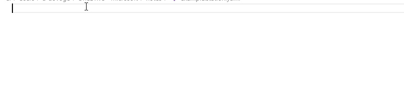

This page was generated from
docs/examples/basic_examples/Station.ipynb.
Interactive online version:
 .
.
Station
In this tutorial, the following topics shall be covered:
What is a station
How to create it, and work with it
Snapshot of a station
Configuring station using a YAML configuration file
[1]:
# Useful imports:
from qcodes.instrument_drivers.mock_instruments import DummyInstrument
from qcodes.parameters import Parameter
from qcodes.station import Station
What is a Station?
Experimental setups are generally large as they consist of many instruments. Each instrument in a given setup tends to be quite complex due to the fact that each comprises a variety of adjustable parameters and other stateful parts. As a result, it deems useful to have a bucket in which the necessary information concerning the instruments that are going to be used in a particular experiment can be conveniently stored, and accessed.
The concept of a station, in essence, is a programmatical representation of such a bucket. Instruments, parameters, and other components can be added to a station. The user gets a station instance that can be referred to in order to access those components.
A station can be configured from a text file which simplifies the initialisation of the instruments. In particular, in this tutorial, we shall provide an example configuration of a station by using a YAML file.
A special use case of a station in an experiment would be the capturing of the state of an experimental setup, known as a snapshot. We shall devote a subsection for the concept of a snapshot.
How to create a Station and work with it?
Let us, first, create a dummy parameter, and a dummy instrument which we shall use throughout the tutorial.
[2]:
# A dummy self-standing parameter
p = Parameter("p", label="Parameter P", unit="kg", set_cmd=None, get_cmd=None)
p.set(123)
[3]:
# A dummy instrument with three parameters
instr = DummyInstrument("instr", gates=["input", "output", "gain"])
instr.gain(42)
Creating a Station
We create a Station object and add previously defined parameter and instrument as its components as follows:
[4]:
station = Station()
station.add_component(p)
station.add_component(instr)
[4]:
'instr'
It is straightforward to verify if the station contains our parameter and instrument:
[5]:
# Now station contains both `p` and `instr`
station.components
[5]:
{'p': <qcodes.parameters.parameter.Parameter: p at 139685486421904>,
'instr': <DummyInstrument: instr>}
Note that it is also possible to add components to a station via arguments of its constructor:
[6]:
station = Station(p, instr)
Accessing Station components
Now that the components have been added to the station, it is possible to access them as its attributes (by using the dot notation). With this feature, users can use tab-completion to find the instrument in the station theyd like to access.
[7]:
# Let's confirm that station's `p` is
# actually the `p` parameter defined above
assert station.p is p
It is also possible to access a component or a sub component of a instrument directly via its name. For example, if we want to access the parameter input of the instrument instr, we can do the following:
[8]:
input_name = station.instr.input.full_name
print(input_name)
param = station.get_component(input_name)
param is instr.input
instr_input
[8]:
True
Removing components from a Station
Removing components from a station should be done with remove_component method - the name of the component that is to be removed should be passed as the argument of the method:
[9]:
station.remove_component("p")
[9]:
<qcodes.parameters.parameter.Parameter: p at 139685486421904>
[10]:
# Now station contains only `instr`
station.components
[10]:
{'instr': <DummyInstrument: instr>}
Default Station
The Station class is designed in such a way that it always contains a reference to a default station object (the Station.default attribute). The constructor of the station object has a default keyword argument that allows to specify whether the resulting instance shall be stored as a default station, or not.
This feature is a convenience. Other objects which consume an instance of Station as an argument (for example, Measurement) can now implement a logic to resort to Station.default in case a Station instance was not explicitly given to them.
Snapshot of a Station
The station has a snapshot method that allows to create a collective, single snapshot of all the instruments, parameters, and submodules that have been added to it. It would be very time-consuming for the user to manually go through every instrument and parameter, and collect the snapshot data.
For example, the Measurement object accepts a station argument exactly for the purpose of storing a snapshot of the whole experimental setup next to the measured data.
Read more about snapshots in general, how to work with them, stations snapshot in particular, and more in this notebook.
Configuring the Station by using a YAML configuration file
The instantiation of the instruments, setting up the proper initial values of the corresponding parameters and similar pre-specifications of a measurement constitutes the initialization portion of the code. In general, this portion can be quite long and tedious to maintain. For example, consider a case in which a certain instrument is no longer needed. In this case a common practice is commenting out the lines of initialization script which are related to the said instrument, and re-run the initialization script. The latter may easily cause a bloaded code with possible repetitions. In another case, we may want to share initialization scripts among collaborators and fail to do so as it is difficult due to the fact that even similar experiments may require different instantiations.
These (and more) concerns are to be solved by a YAML configuration file of the Station object (formerly known as the StationConfigurator).
The YAML configuration file allows one to statically and uniformly specify settings of all the instruments (and their parameters) that the measurement setup (the physical station) consists of, and load them with those settings on demand. The Station object implements convenient methods for this procedure.
The YAML configuration file, if used, is stored in the station as a attribute with the name config, and is thus included in the snapshot of the whole station.
Note that we are not obliged to use the YAML configuration file to set up a Station (see, for example, the section How to create a Station and work with it of this tutorial).
In what follows, we shall discuss:
The structure of the YAML configuration file
Stations methods related to working with the YAML configurationEntries in QCoDeS configuration that are related to
Station
Example of YAML Station configuration
Here, we provide an example YAML station configuration file. All the fields within the configuration file are explained via inline comments that should not be disregarded. A careful inspection of the comments by the reader is strongly recomended for a clear understanding.
In particular, here, we would like to underline the difference between parameters and add_parameters sections. In this example file for the QDac instrument, we define a Bx parameter as a new, additional parameter. The Bx parameter will have the properties such as limits, scale, etc. different from its source parameter ch02.v that it controls. Specifically, this means that when setting Bx to 2.0:
the value of
2.0is being validated against the limits ofBx(0.0, 3.0),then the raw (scaled) value of
130.468(= 2.0 * 65.234) is passed to thech02.vparameter,then that value of
130.468is validated against the limits ofch02.v(0.0, 1.5e+3),then the raw (scaled) value of
1.30468(= 130.468 * 0.01) is finally passed to the physical instrument.
We also note that in the exponential represantations of numbers, it is required to provide + and - signs after e, e.g., we write 7.8334e+5 and 2.5e-23. Refer to YAML file format specification for more information.
# Example YAML Station configuration file
#
# This file gets snapshotted and can be read back from the JSON
# snapshot for every experiment run.
#
# All fields are optional unless explicitly mentioned otherwise.
#
# As in all YAML files a one-line notation can also be used
# instead of nesting notation.
#
# The file starts with a list of loadable instruments instances,
# i.e. there can be two entries for two instruments of the same
# type if you want to specify two different use cases
# e.g. "dmm1-readout" and "dmm1-calibration".
#
instruments:
# Each instrument is specified by its name.
# This name is what is looked up by the `load_instrument`
# method of `Station`.
# Simulated instruments can also be specified here, just put
# the path to the simulation .yaml file as the value of the
# "init"->"visalib" field (see below for an example of the
# "init" section as well as an example of specifying
# a simulated instrument).
qdac:
# Full import path to the python class of the instrument
# driver
type: qcodes.instrument_drivers.QDev.QDevQDac
# Visa address of the instrument.
# Note that this field can also be specified in the
# "init" section (see below) but the address specified
# here will overrule the address from the "init" section.
# Essentially, specifying address here allows avoiding
# the "init" section completely when address is the only
# necessary argument that the instrument driver needs.
# For obvious reasons, this field is required for VISA
# instruments.
address: ASRL4::INSTR
# If an instrument with this name is already instantiated,
# and this field is true, then the existing instrument
# instance will be closed before instantiating this new one.
# If this field is false, or left out, closing will not
# happen.
enable_forced_reconnect: true
#
# The "init" section specifies constant arguments that are
# to be passed to the __init__ function of the instrument.
# Note that it is the instrument's driver class that defines
# the allowed arguments, for example, here "update_currents"
# is an argument that is specific to "QDac" driver.
init:
terminator: \n
update_currents: false
#
# Setting up properties of parameters that already exist on
# the instrument.
parameters:
# Each parameter is specified by its name from the
# instrument driver class.
# Note that "dot: notation can be used to specify
# parameters in (sub)channels and submodules.
ch01.v:
# If an alias is specified, the parameter becomes
# accessible under another name, so that you can write
# `qdac.cutter_gate(0.2)` instead of `qdac.ch01.v(0.2)`.
# Note that the parameter instance does not get copied,
# so that `(qdac.ch01.v is qdac.cutter_gate) == True`.
alias: cutter_gate
# Set new label.
label: Cutter Gate Voltage
# Set new unit.
unit: mV
# Set new scale.
scale: 0.001
# Set new post_delay.
post_delay: 0
# Set new inter_delay.
inter_delay: 0.01
# Set new step.
step: 1e-4
# If this field is given, and contains an array of two
# numbers like here, then the parameter
# gets a new `Numbers` validator with these values as
# lower and upper limits, respectively (in this case, it
# is `Numbers(-0.1, 0.1)`).
limits: [-0.1, 0.1]
# Set the parameter to this given initial value upon
# instrument initialization.
# Note that if the current value on the physical
# instrument is different, the parameter will be ramped
# with the delays and step specified in this file.
initial_value: 0.01
# In case this values equals to true, upon loading this
# instrument from this configuration this parameter will
# be appended to the list of parameters that are
# displayed in QCoDeS `Monitor`.
monitor: true
# As in all YAML files a one-line notation can also be
# used, here is an example.
ch02.v: {scale: 0.01, limits: [0.0, 1.5e+3] , label: my label}
ch04.v: {alias: Q1lplg1, monitor: true}
#
# This section allows to add new parameters to the
# instrument instance which are based on existing parameters
# of the instrument. This functionality is based on the use
# of the `DelegateParameter` class.
add_parameters:
# For example, here we define a parameter that represents
# magnetic field control. Setting and getting this
# parameter will actually set/get a specific DAC channel.
# So this new magnetic field parameter is playing a role
# of a convenient proxy - it is much more convenient to
# perform a measurement where "Bx" is changed in tesla as
# opposed to where some channel of some DAC is changed in
# volts and one has to clutter the measurement code with
# the mess of conversion factors and more.
# Every new parameter definition starts with a name of
# the new parameter.
Bx:
# This field specifies the parameter which "getter" and
# "setter" will be used when calling `get`/`set` on this
# new parameter.
# Required field.
source: ch02.v
# Set the label. Otherwise, the one of the source parameter
# will be used.
label: Magnetic Field X-Component
# Set the unit. Otherwise, the one of the source parameter
# will be used.
unit: T
# Other fields have the same purpose and behavior as for
# the entries in the `add_parameter` section.
scale: 65.243
inter_delay: 0.001
post_delay: 0.05
step: 0.001
limits: [0.0, 3.0]
initial_value: 0.0
# For the sake of example, we decided not to monitor this
# parameter in QCoDeS `Monitor`.
#monitor: true
#
# More example instruments, just for the sake of example.
# Note that configuring simulated instruments also works,
# see the use of 'visalib' argument field below
dmm1:
type: qcodes.instrument_drivers.agilent.Agilent34401A
enable_forced_reconnect: true
address: GPIB::1::65535::INSTR
init:
visalib: 'Agilent_34400A.yaml@sim'
parameters:
volt: {monitor: true}
mock_dac:
type: qcodes.instrument_drivers.mock_instruments.DummyInstrument
enable_forced_reconnect: true
init:
# To pass an list of items use {}.
gates: {"ch1", "ch2"}
add_parameters:
Bx: {source: ch1, label: Bx, unit: T,
scale: 28, limits: [-1, 1], monitor: true}
mock_dac2:
type: qcodes.instrument_drivers.mock_instruments.DummyInstrument
enable_forced_reconnect: true
Using Station with YAML configuration files
In this section, we shall briefly describe the usage of Station with YAML configuration files. For more details, we refer to the docstrings of the methods of the Station class.
A Station can be created with or without one or more YAML configuration files. With YAML configuration files, Station can be created by passing the file names (or file names with absolute path) to Stations constructor. File names and location resolution also takes into account related entries in the 'station' section of the QCoDeS configuration. We refer to corresponding documentation for more information.
station = Station(config_file='qutech_station_25.yaml')
or
station = Station(config_file=['example_1.yaml', 'example_2.yaml'])
Alternatively, load_config_file or load_config_files methods can be called on an already instantiated Station to load the configuration files.
load_config_filemethod can be used for loading 1 configuration file.load_config_filesmethod can be used for loading 1 or more configuration files. If multiple configuration files are provided, this method first merges them into one temporary file and then loads that into the station. Please note that, the merged file is temporary and not saved on the disk.
station = Station()
station.load_config_file=r'Q:\\station_data\\qutech_station_25.yaml'
or
station = Station()
station.load_config_files('example_1.yaml', 'example_2.yaml', 'example_3.yaml')
In case the configuration is already available as a YAML string, then that configuration can be loaded using Stations load_config method. We refer to its docstring and signature for more information.
Once the YAML configuration is loaded, the load_instrument method of the Station can be used to instantiate a particular instrument that is described in the YAML configuration. Calling this method not only will return an instance of the instantiated instrument, but will also add it to the station object.
For example, to instantiate the qdac instrument from the YAML configuration example from the previous section, it is sufficient to execute the following:
loaded_qdac = station.load_instrument('qdac')
Note the load_instruments revive_instance argument, as well as enable_force_reconnect setting from the YAML configuration - these define what to do in case an instrument with the given name has already been instantiated in this python session.
There is a more convenient way to load the instruments. Upon load of the YAML configuration, convenient load_<instrument name> methods are being generated on the Station object. Users can make use of tab-completion in their development environments to list what instruments can be loaded by the station object from the loaded YAML configuration. For example, loading the QDac instrument can, alternatively, be done via:
conveniently_loaded_qdac = station.load_qdac()
We note that instruments are instantiated only when load_* methods are called. This means that loading a YAML configuration does NOT automatically instantiate anything.
For the instruments that are loaded with the load_* methods, it is recommended to use Stations close_and_remove_instrument method for closing and removing those from the station.
Setting up Visual Studio Code to work with station files
VSCode can be conveniently used to work with station files. The YAML extension by Red Hat, allows to use JSON schemas to validate and auto-complete YAML files.
Quick setup steps
install YAML extension by Red Hat
run
qcodes.utils.installation.register_station_schema_with_vscode()make sure your station file has the extension
.station.yaml
Setup details
To associate the qcodes station schema with *.station.yaml files you can either run
[11]:
import os
import sys
from qcodes.utils.installation import register_station_schema_with_vscode
# if statement for CI only
if sys.platform == "win32" and os.path.exists(
os.path.expandvars(os.path.join("%APPDATA%", "Code", "User", "settings.json"))
):
register_station_schema_with_vscode()
/tmp/ipykernel_10248/3445843227.py:4: QCoDeSDeprecationWarning: The `qcodes.utils.installation` module is deprecated. Please update to import from qcodes.extensions
from qcodes.utils.installation import register_station_schema_with_vscode
or manually add the following to your vscode user/workspace settings:
"yaml.schemas": {
"file:///path/to/home/schemas/station.schema.json": "*.station.yaml"
}
To get autocompletion for instruments from other packages run
import qcodes
import qcodes_contrib_drivers
import zhinst
qcodes.station.update_config_schema(qcodes_contrib_drivers, zhinst)
where qcodes_contrib_drivers and zhinst are example packages that are available in the python environment where qcodes is running from.
Beware that the generated schema file is not python-environment aware. To circumvent that, you can manually generate a schema file for each environment and register them as a workspace setting in vscode.
[12]:
os.path.expandvars(os.path.join("%APPDATA%", "Code", "User", "settings.json"))
[12]:
'%APPDATA%/Code/User/settings.json'